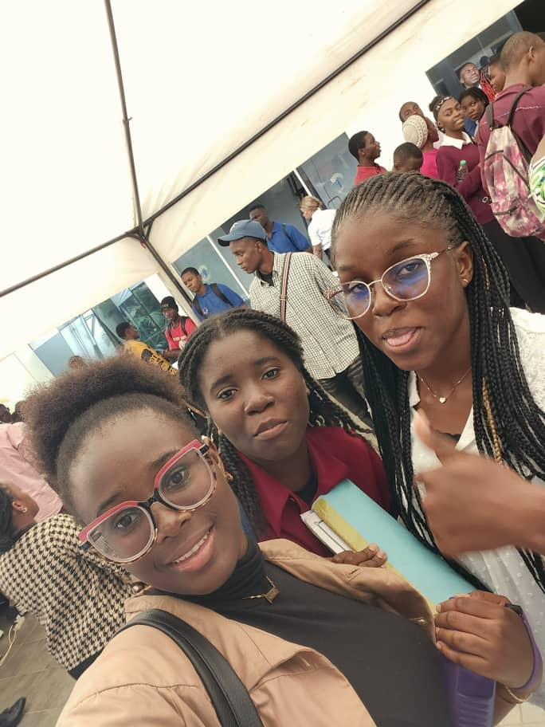
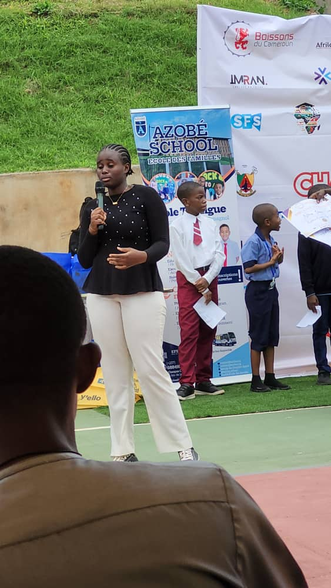
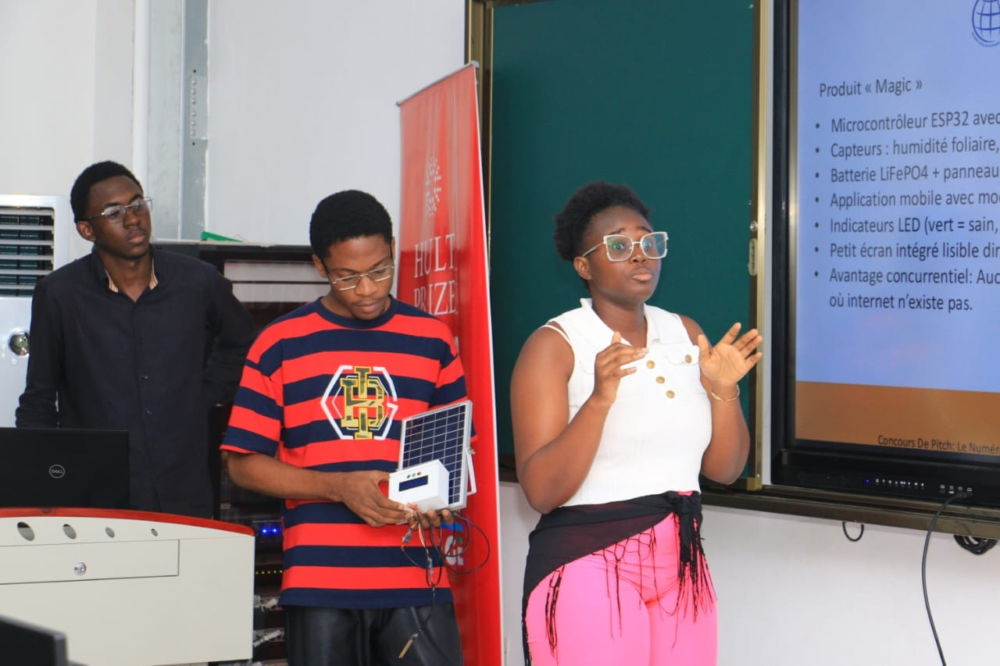
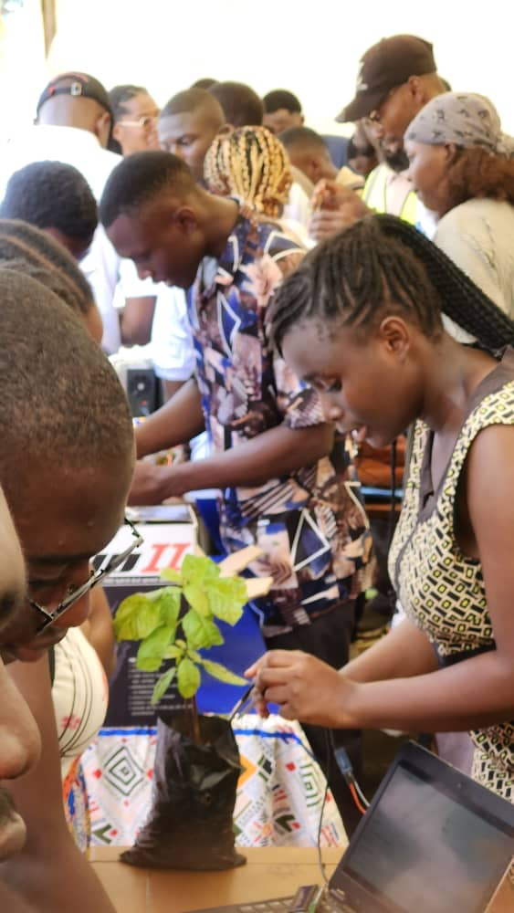
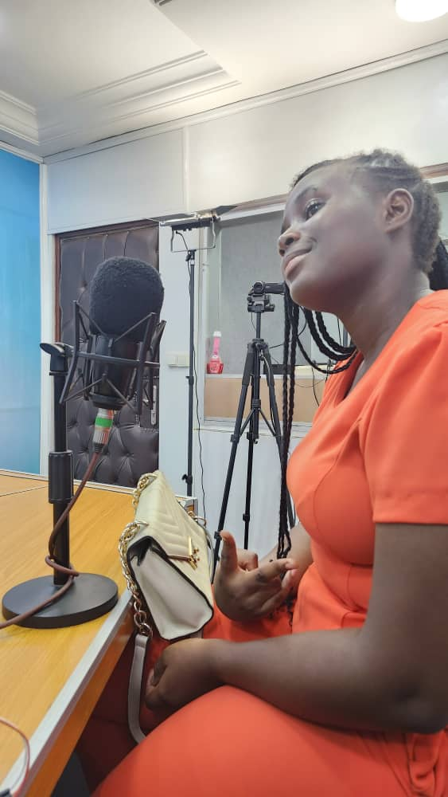
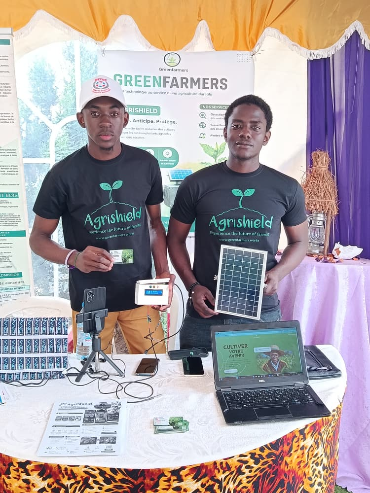
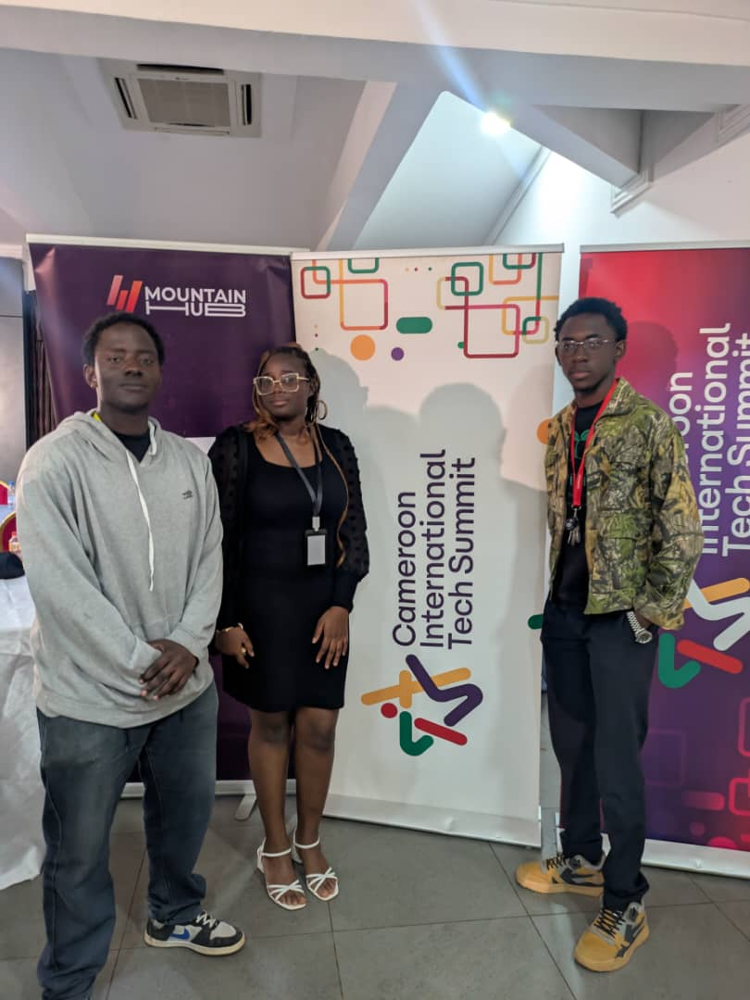
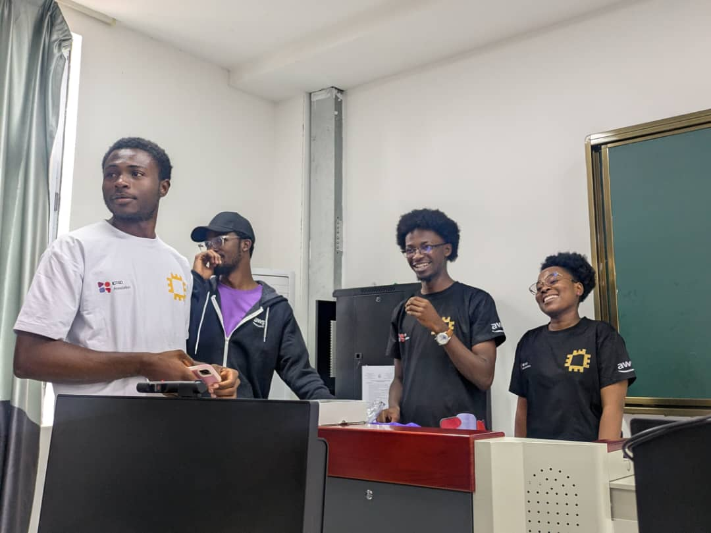

My name is Theresa Divine. I'm a 3rd-year Computer Science student
at the University of Yaoundé I, and I love music, technology, and everything related to innovation.
A volunteer in several communities, that's where I developed my entrepreneurial spirit —
and for the past two years, I owe it to the Hult Prize.
02
My Path
April 2025
Volunteer — Hult Prize (National Phase)
My very first steps within the Hult Prize, the starting point of everything that followed.
2025 — 2026
Volunteer — Hult Prize OnCampus, University of Yaoundé I
In charge of finding sponsors for the event on my campus. I secured
Freemopay, Hinkaku, and
Enovation Factory, among others.
2026
Volunteer — Hult Prize Cameroon
In charge of all Campus Directors across the country: communication, cohesion, and smooth
coordination of their work organizing events at their universities. A team of more than
15 Campus Directors across Cameroon.
2026
Participant — Hult Prize, with GreenFarmers
That same year, I also led my own team and my own project,
GreenFarmers, as a participant in the competition.
03
What It Gave Me
01
Mentors, big brothers
I met professional mentors there — my "big brothers" —
who still support me today.
02
Access to other communities
This first experience opened the doors to other communities for me,
like AWS and GDG Yaoundé.
03
Working under pressure, public speaking
Two skills I didn't have before, developed directly in the field,
within this community.
04
An entrepreneurial mindset — and GreenFarmers
I owe the development of my entrepreneurial mindset to my time at the Hult Prize —
and with it, the creation of GreenFarmers.
03bis
My Mentors
Big brothers I met through the Hult Prize, who still inspire me today.
Click on a photo to learn more about each of them.
04
After the Hult Prize
What I learned there didn't stop at the competition — it carried on
into everything I did afterward.
Events

Cybersecurity Day

Community Manager — AFED

JUIN — University Computer Science Day

University Entrepreneurship Week

Radio FM Feature
Competitions

GETECDAP Competition

CITS'26
Events I Organized
Devfest 2025Daytona YaoundéCommunity Day Saint JeanXYBERCLAN Workshop — Moderator

AWS × ICT4D Workshops
05
Challenges I Overcame
Starting from scratch
I knew nothing about design, could barely put two English sentences together,
and public speaking was hard for me. But some people trusted me anyway.
→ That trust pushed me to learn fast, on the ground.
A deleted Sheets folder
Being new to Google Sheets, I once deleted an entire folder containing
the Hult Prize's organizational data.
→ That mistake taught me new skills I hadn't mastered yet.
The temptation to quit
This year, at one point, the pressure was so intense I wanted to give up completely.
→ I overcame it by learning to plan my days, with the help of Notion.
06
Who I Am Today
I went from being a restless, clumsy little girl to someone who puts her energy
to work for others, while knowing exactly what she wants in life.
Today, I'm co-founder of GreenFarmers, an agri-tech company,
and of XYBERCLAN, a digital services startup.
I'm also Deputy Head of the Digital Solutions Unit at Human Resources Volunteer,
and I remain active in several communities — GDG Yaoundé, AWS Community Cameroon,
and of course Hult Prize Cameroon.
My long-term vision: combining tech entrepreneurship with diplomacy,
to position Africa as a central player in global innovation.
And I owe most of that to my time at the Hult Prize.